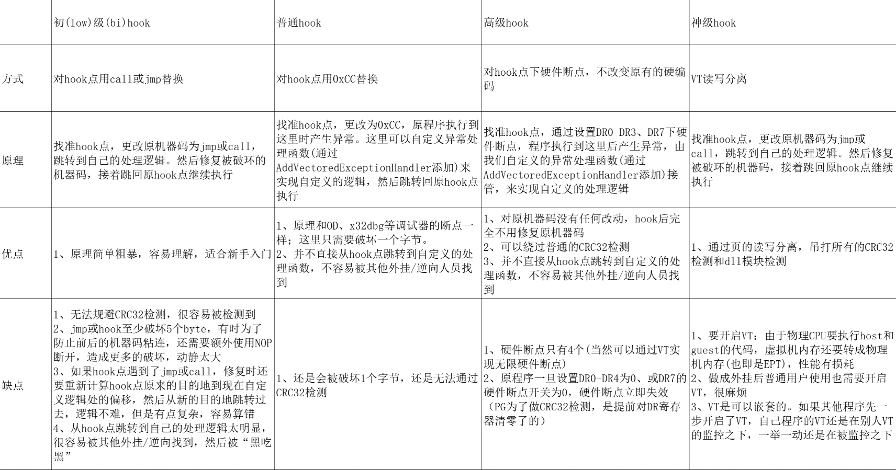

# Hook 攻防常用手段
# 阶段一：
(防) 检测 JMP (E9)，检测跳转范围
(破) 想方设法绕过
若检测跳转范围则可以分为几次小跳转来进行跳转。
# 阶段二：
(防) 写个线程全代码校验 / CRC 检测
(破) 修改检测代码、挂起检测函数
针对全代码校验：设置硬件读断点，当有程序尝试读代码，便会断下，这是就发现了检测线程，我们就可以分析并修改检测线程的代码了。
# 阶段三：
A->B->C->D->HOOK函数
(防) 先对相关 API 全代码校验，多个线程互相检测，并检测线程是否在活动中。
(破) 使用瞬时钩子 / 硬件钩子
找检测线程的漏洞，来写对应的代码。
使用瞬时 HOOK。
不管是全代码校验也好，CRC 校验也好，多线程检测也好，其目的不就是保护自己的函数不被别人改掉吗，那有没有一种代码把钩子该做的事情做了，还不更改函数的代码呢？
循环检测：
for (;;) | |
{ | |
Sleep(500); | |
//1. // 检测 ExitProcess 是否被 HOOK | |
//2. // 检测被保护的函数是否被 HOOK | |
if (memcmp((LPVOID)dwAPIAddr,szAPICode,0x30)!=0) | |
{ | |
//A bRet = VirtualProtect((LPVOID)dwAPIAddr,0x10,PAGE_READWRITE,&dwOldProtect); | |
f (bRet) | |
{ | |
memcpy((LPVOID)dwAPIAddr,szAPICode,0x30); | |
VirtualProtect((LPVOID)dwAPIAddr,0x10,dwOldProtect,&dwOldProtect); | |
} | |
//B ExitProcess(0); | |
} | |
} |
假设我们逆向分析出了上述代码：
其功能为如果检测到被保护函数被 hook 则执行恢复代码，并关闭程序。
假设以上代码是 D 线程，还有一个 C 线程在一直检测 D，所以我们不能动 D 线程，但我们发现 D 线程会执行 ExitProcess 函数，那我们可以对 ExitProcess 挂钩，让其退出功能失效，这样用就搞定了循环检测。
若防守的一方在 D 线程中一开始就检测 ExitProcess 是否被 HOOK 呢？
分析检测代码的流程
检测 ExitProcess 是否被 HOOK，被 HOOK 的话恢复代码，然后退出。
检测被保护函数是否被 HOOK，被 HOOK 的话恢复代码，然后退出。
这其中用来复原原来函数的关键函数 VirtualProtect , 一般是不会被检测的，我们可以对其挂钩子，先判段是不是 A 地址调用的函数（这个可以查看堆栈中的函数返回地址），如果是那么我们的钩子就执行代码给 ExitProcess 挂钩子，一样判断是否是 B 地址调用的函数，如果是执行钩子使其退出功能失效，使其失效后还要立即摘掉钩子，恢复函数，因为新一轮的检测又开始了。
切记我们不能动 D 线程的任何代码。
总结：
<1> 对 VirtualProtect 进行 HOOK，只有当调用地址为 A 时，对 ExitProcess 进行挂钩，并修正返回结果，改变执行流程。
<2> 在 ExitProcess 的 HOOK 处理函数中判断，只有当调用地址为 B 的时候，才将 ExitProcess 失效，然后卸载 HOOK。
# 瞬时 HOOK 代码
撰写代码前先捋一下思路：
本程序只针对上述阶段三的 HOOK 防守
这里的前提是有一个函数 VirtualProtect 没有被 hook，我们这里的瞬时 HOOK 的概念是针对被检测的 ExitProcess 。首先我们要触发 MessageBox 的检测函数，让检测程序去调用 VirtualProtect 修复 MessageBox ，这样我们就要先 HOOK VirtualProtect 函数，当 A 地址调用的 VirtualProtect 则执行 HOOK 处理函数去 HOOK ExitProcess 函数，当 B 地址调用 ExitProcess 函数时，则执行 ExitProcess 处的 HOOK 处理函数，先恢复 ExitProcess 函数，然后直接 ret 返回，这样 ExitProcess 函数就失效了，检测线程也就没用了，然后 HOOK MessageBox 函数就行了。
//dllmain.cpp : 定义 DLL 应用程序的入口点。 | |
#define WIN32_LEAN_AND_MEAN // 从 Windows 头文件中排除极少使用的内容 | |
// Windows 头文件 | |
#include <windows.h> | |
//5 个字节 | |
#define PATCH_LENGTH_VP 5 | |
DWORD dwHookAddressVP = 0; | |
DWORD dwCallAddressVP = 0x12345678; | |
#define PATCH_LENGTH_EP 5 | |
DWORD dwHookAddressEP = 0; | |
DWORD dwCallAddressEP = 0x12345678; | |
#define PATCH_LENGTH_MB 5 | |
DWORD dwHookAddressMB = 0; | |
DWORD dwRetAddress = 0; | |
WCHAR szNewText[] = L"瞬时Hook!"; | |
/******************************************** Hook VirtualProtect Begin ********************************/ | |
VOID SetVirtualProtectHook() { | |
// 获取要 HOOK 的函数地址 | |
dwHookAddressVP = (DWORD)GetProcAddress(LoadLibrary(L"kernel32.dll"), "VirtualProtect"); | |
// 安装或者卸载 HOOK | |
HookVirtualProtect(TRUE); | |
} | |
void VirtualProtectProc() { | |
// 为 ExitProcess 挂上瞬时 hook | |
dwHookAddressVP = (DWORD)GetProcAddress(LoadLibrary(L"kernel32.dll"), "ExitProcess"); | |
OutputDebugString(L"VirtualProtect()开始挂钩 HOOKExitProcess()"); | |
HookExitProcess(TRUE); | |
} | |
void __declspec(naked) NewVirtualProtect() { | |
__asm { | |
// 保存寄存器 | |
pushad; | |
pushfd; | |
// 判断调用地址 如果是目标地址 则调用处理函数 | |
mov eax, dword ptr ss : [exp + 0x24] ; | |
cmp eax, dwCallAddressVP; | |
jnz Lable; | |
call VirtualProtectProc; | |
popfd; | |
popad; | |
xor eax, eax; | |
ret; | |
// 恢复寄存器 | |
Lable: | |
popfd; | |
popad; | |
// 执行覆盖的代码 | |
mov edi, edi; | |
push ebp; | |
mov ebp, esp; | |
// 执行返回 | |
push dwHookAddressVP; | |
add dword ptr ds : [esp] , PATCH_LENGTH_VP; | |
retn; | |
} | |
} | |
BOOL HookVirtualProtect(BOOL bOpen) { | |
BOOL bRet = FALSE; | |
BYTE byJmpCode[PATCH_LENGTH_VP] = { 0xE9 }; | |
DWORD dwOldProtect = 0; | |
static BYTE byOriginalCode[PATCH_LENGTH_VP] = { 0 }; | |
static BOOL bHookFlag = FALSE; | |
// 初始化 byJmpCode | |
memset(&byJmpCode[1], 0x90, PATCH_LENGTH_VP - 1); | |
// 存储跳转地址 | |
*(DWORD*)&byJmpCode[1] = (DWORD)NewVirtualProtect - (DWORD)dwHookAddressVP - 5; | |
// 备份被覆盖的 Code | |
memcpy(byOriginalCode, (LPVOID)dwHookAddressVP, PATCH_LENGTH_VP); | |
if (bOpen) | |
{ | |
if (!bHookFlag) | |
{ | |
VirtualProtect((LPVOID)dwHookAddressVP, PATCH_LENGTH_VP, PAGE_EXECUTE_READWRITE, &dwOldProtect); | |
memcpy((LPVOID)dwHookAddressVP, byJmpCode, PATCH_LENGTH_VP); | |
VirtualProtect((LPVOID)dwHookAddressVP, PATCH_LENGTH_VP, dwOldProtect, 0); | |
bHookFlag = TRUE; | |
bRet = TRUE; | |
} | |
else | |
{ | |
if (bHookFlag) | |
{ | |
VirtualProtect((LPVOID)dwHookAddressVP, PATCH_LENGTH_VP, PAGE_EXECUTE_READWRITE, &dwOldProtect); | |
memcpy((LPVOID)dwHookAddressVP, byOriginalCode, PATCH_LENGTH_VP); | |
VirtualProtect((LPVOID)dwHookAddressVP, PATCH_LENGTH_VP, dwOldProtect, 0); | |
bHookFlag = FALSE; | |
bRet = TRUE; | |
} | |
} | |
} | |
return bRet; | |
} | |
/******************************************** Hook VirtualProtect End ********************************/ | |
/******************************************** Hook ExitProcess Begin ********************************/ | |
void ExitProcessProc() { | |
// 卸载瞬时 HOOK 避免被检测到 | |
OutputDebugString(L"ExitProcess()开始卸载：HOOKExitProcess()"); | |
HookExitProcess(FALSE); | |
} | |
void __declspec(naked) NewExitProcess() { | |
__asm { | |
// 保存寄存器 | |
pushad; | |
pushfd; | |
// 判断调用地址，如果是目标地址，则调用处理函数 | |
mov eax, dword ptr ss : [exp + 0x24] ; | |
cmp eax, dwCallAddressEP; | |
jnz Lable; | |
call ExitProcessProc; | |
popfd; | |
popad; | |
ret;//ExitProcess 没有返回值，所以直接返回 | |
// 恢复寄存器 | |
Lable: | |
popfd; | |
popad; | |
// 执行覆盖的代码 | |
mov edi, edi; | |
push ebp; | |
mov ebp, esp; | |
// 执行返回 | |
push dwHookAddressEP; | |
add dword ptr ds : [esp] , PATCH_LENGTH; | |
retn; | |
} | |
} | |
BOOL HookExitProcess(BOOL bOpen) { | |
BOOL bRet = FALSE; | |
BYTE byJmpCode[PATCH_LENGTH_EP] = { 0xE9 }; | |
DWORD dwOldProtect = 0; | |
static BYTE byOriginalCode[PATCH_LENGTH_EP] = { 0 }; | |
static BOOL bHookFlag = FALSE; | |
// 初始化 byJmpCode | |
memset(&byJmpCode[1], 0x90, PATCH_LENGTH_EP - 1); | |
// 存储跳转地址 | |
*(DWORD*)&byJmpCode[1] = (DWORD)NewExitProcess - (DWORD)dwHookAddressEP - 5; | |
// 备份被覆盖的 Code | |
memcpy(byOriginalCode, (LPVOID)dwHookAddressEP, PATCH_LENGTH_EP); | |
if (bOpen) | |
{ | |
if (!bHookFlag) | |
{ | |
VirtualProtect((LPVOID)dwHookAddressEP, PATCH_LENGTH_EP, PAGE_EXECUTE_READWRITE, &dwOldProtect); | |
memcpy((LPVOID)dwHookAddressEP, byJmpCode, PATCH_LENGTH_EP); | |
VirtualProtect((LPVOID)dwHookAddressEP, PATCH_LENGTH_EP, dwOldProtect, 0); | |
bHookFlag = TRUE; | |
bRet = TRUE; | |
} | |
else | |
{ | |
if (bHookFlag) | |
{ | |
VirtualProtect((LPVOID)dwHookAddressEP, PATCH_LENGTH_EP, PAGE_EXECUTE_READWRITE, &dwOldProtect); | |
memcpy((LPVOID)dwHookAddressEP, byOriginalCode, PATCH_LENGTH_EP); | |
VirtualProtect((LPVOID)dwHookAddressEP, PATCH_LENGTH_EP, dwOldProtect, 0); | |
bHookFlag = FALSE; | |
bRet = TRUE; | |
} | |
} | |
} | |
return bRet; | |
} | |
/******************************************** Hook ExitProcess End ********************************/ | |
/******************************************** Hook MessageBox Begin ********************************/ | |
void __declspec(naked) NewMessageBox() { | |
__asm { | |
// 保存寄存器 | |
pushad; | |
pushfd; | |
// 修改数据 esp+8 | |
lea eax, dword ptr ds : [szNewText] ; | |
mov dword ptr ss : [esp + 0x24 + 8] , eax; | |
// 恢复寄存器 | |
popfd; | |
popad; | |
// 执行覆盖的代码 | |
mov edi, edi; | |
push ebp; | |
mov ebp, esp; | |
// 执行返回 | |
jmp dwRetAddress; | |
} | |
} | |
BOOL HookMessageBox(BOOL bOpen) { | |
BOOL bRet = FALSE; | |
BYTE byJmpCode[PATCH_LENGTH_MB] = { 0xE9 }; | |
DWORD dwOldProtect = 0; | |
static BYTE byOriginalCode[PATCH_LENGTH_MB] = { 0 }; | |
static BOOL bHookFlag = FALSE; | |
// 初始化 byJmpCode | |
memset(&byJmpCode[1], 0x90, PATCH_LENGTH_MB - 1); | |
// 存储跳转地址 | |
*(DWORD*)&byJmpCode[1] = (DWORD)NewMessageBox - (DWORD)dwHookAddressMB - 5; | |
// 备份被覆盖的 Code | |
memcpy(byOriginalCode, (LPVOID)dwHookAddressMB, PATCH_LENGTH_MB); | |
if (bOpen) | |
{ | |
if (!bHookFlag) | |
{ | |
VirtualProtect((LPVOID)dwHookAddressMB, PATCH_LENGTH_MB, PAGE_EXECUTE_READWRITE, &dwOldProtect); | |
memcpy((LPVOID)dwHookAddressMB, byJmpCode, PATCH_LENGTH_MB); | |
VirtualProtect((LPVOID)dwHookAddressMB, PATCH_LENGTH_MB, dwOldProtect, 0); | |
bHookFlag = TRUE; | |
bRet = TRUE; | |
} | |
else | |
{ | |
if (bHookFlag) | |
{ | |
VirtualProtect((LPVOID)dwHookAddressMB, PATCH_LENGTH_MB, PAGE_EXECUTE_READWRITE, &dwOldProtect); | |
memcpy((LPVOID)dwHookAddressMB, byOriginalCode, PATCH_LENGTH_MB); | |
VirtualProtect((LPVOID)dwHookAddressMB, PATCH_LENGTH_MB, dwOldProtect, 0); | |
bHookFlag = FALSE; | |
bRet = TRUE; | |
} | |
} | |
} | |
return bRet; | |
} | |
VOID SetMessageBoxHook() { | |
// 获取要 HOOK 的函数地址 | |
dwHookAddressMB = (DWORD)GetProcAddress(LoadLibrary(L"user32.dll"), "MessageBoxW"); | |
dwRetAddress = dwHookAddressMB + PATCH_LENGTH_MB; | |
// 安装或者卸载 HOOK | |
HookMessageBox(TRUE); | |
} | |
/******************************************** Hook MessageBox End ********************************/ | |
DWORD WINAPI ThreadProc(LPVOID lpParameter) | |
{ | |
SetVirtualProtectHook(); | |
SetMessageBoxHook(); | |
} | |
BOOL APIENTRY DllMain(HMODULE hModule, | |
DWORD ul_reason_for_call, | |
LPVOID lpReserved | |
) | |
{ | |
switch (ul_reason_for_call) | |
{ | |
case DLL_PROCESS_ATTACH: | |
ThreadProc(NULL); | |
case DLL_THREAD_ATTACH: | |
case DLL_THREAD_DETACH: | |
case DLL_PROCESS_DETACH: | |
break; | |
} | |
return TRUE; | |
} |
# 更多的 HOOK
